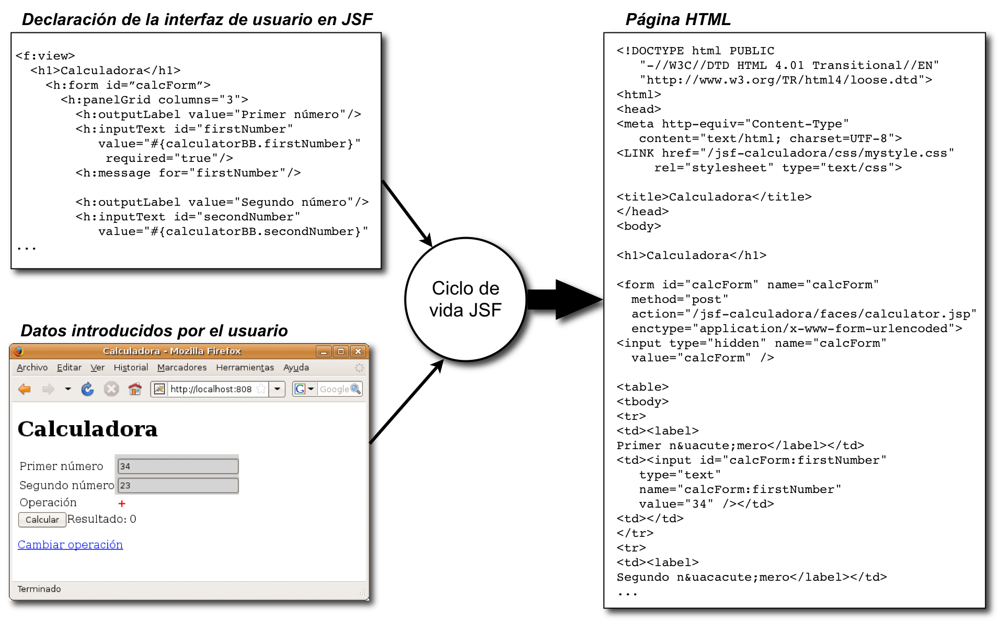
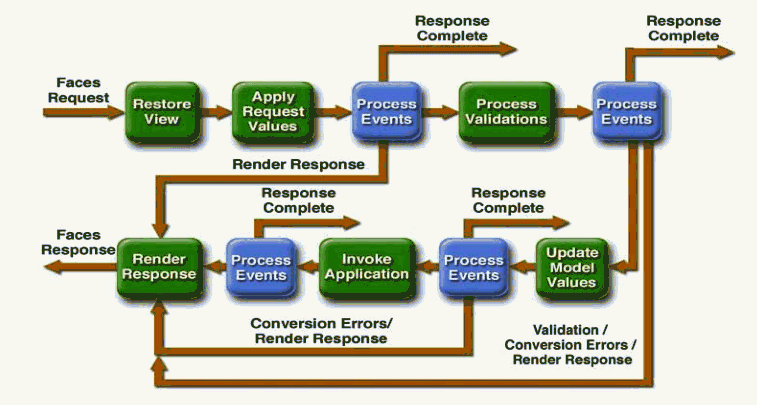
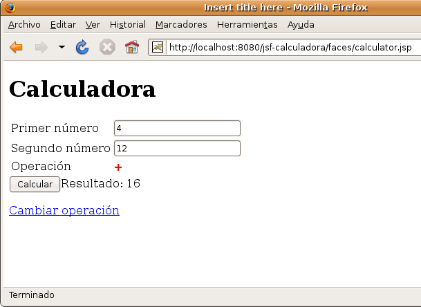
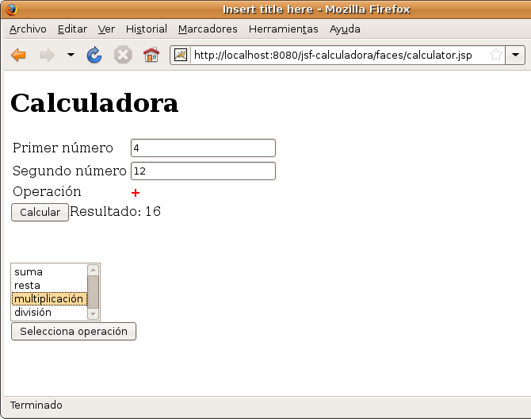
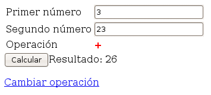
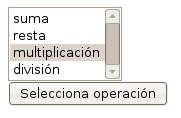
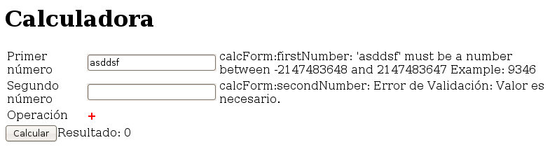
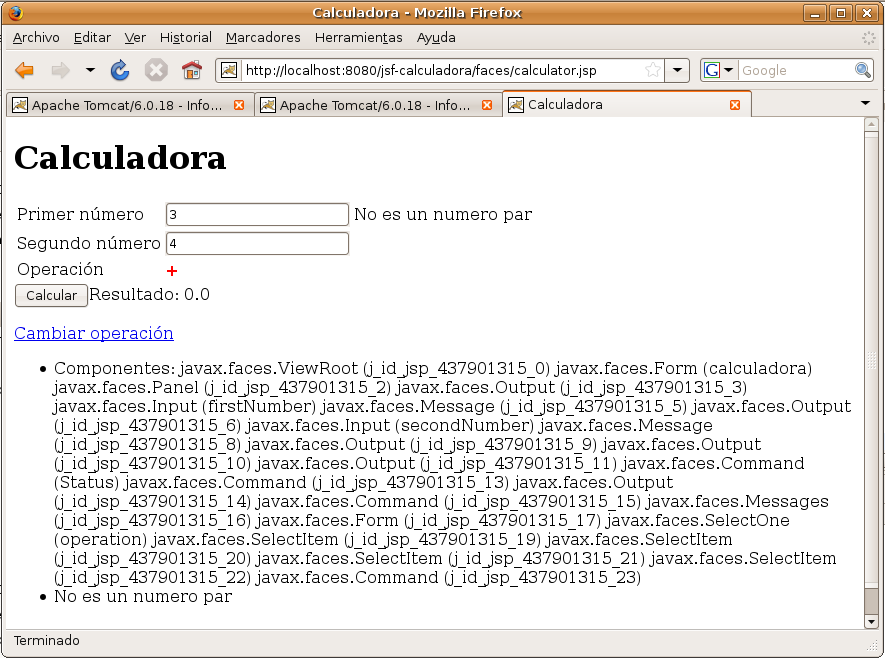

El ciclo de vida de JSF
La arquitectura JSF
En esta sesión vamos a estudiar en profundidad cómo se gestionan las peticiones a JavaServer Faces, incluyendo detalles de la implementación de esta arquitectura. Igual que en las sesiones pasadas, utilizaremos un ejemplo concreto para ilustrar todos los aspectos. Será una sencilla aplicación web que llamaremos Calculadora que permite al usuario realizar operaciones matemáticas.
Veremos los conceptos del ciclo de vida de una petición JSF, qué es una petición, cómo se validan los datos que el usuario introduce en el componente, cómo obtiene el componente los datos del modelo y cómo se procesan y definen los eventos asociados.
Tal y como veíamos en la sesión anterior, y definiéndolo de una forma muy simple, JSF es un framework orientado a recoger datos del usuario, pasarlos a la capa del modelo de la aplicación, realizar las acciones correspondientes en la aplicación y pintar los datos resultantes. Todo ello en un entorno web, con peticiones HTTP y páginas HTML.
Los datos se introducen y se muestran en forma de texto, y se almacenan en un formato dependiente de la aplicación. Por ejemplo, una fecha se puede representar con un formato dd-mm-aaaa mientras que su representación interna puede ser un objeto de la clase java.util.Date . Para realizar esta conversión entre el texto y el formato interno, se asocian al componente validadores y conversores .
Como vimos en la sesión pasada, esta separación entre la parte visual del componente (código HTML en la página web), el modelo de datos ( managed beans ) y las acciones (código Java que procesa el modelo y controla la vista) es un esquema tradicional en todos los framework de gestión de interfaces de usuario que se denomina patrón Modelo/Vista/Controlador (MVC) .
La aportación fundamental de la tecnología JSF es la adaptación del patrón MVC al entorno web. Para ello, el código final en el que se define un componente es código HTML y los eventos disparados por el usuario se guardan en la petición HTTP. Un servlet de la clase javax.faces.webapp.FacesServlet es el motor de cualquier aplicación JSF. Este servlet procesa la petición, gestiona todos los componentes relacionados y termina generando el código HTML en el que se traducen estos componentes.
Recordemos, como vimos en la sesión pasada, que el funcionamiento básico de JSF cuando recibe una petición JSF consiste en obtener la vista JSF, procesarla con los datos introducidos por el usuario y que llegan en la petición y generar una página HTML como resultado. Este proceso (petición, procesamiento y generación de página HTML) es lo que se denomina el ciclo de vida JSF . Veremos con detalle los pasos que realiza la arquitectura JSF dentro de este ciclo de procesamiento. La siguiente figura muestra un ejemplo concreto de la aplicación Calculadora que utilizaremos en esta sesión.

Ciclo de vida
Cuando se carga la aplicación web en el servidor se inicializa el framework JSF. Se lee el fichero de configuración faces-config.xml y se crean los beans gestionados definidos con el ámbito application , realizando las sentencias de incialización necesarias. Después el motor de JSF está listo para recibir peticiones y para lanzar el ciclo de vida de JSF con cada una.
Lo que en JSF se denomina ciclo de vida no es más que una secuencia de fases por las que pasa una petición JSF desde que se recibe en el servidor hasta que se genera la página HTML resultante. El servlet que implementa el framework ( javax.faces.webapp.FacesServlet ) recibe la petición y realiza todo el ciclo, creando y utilizando los objetos Java que representan los componentes JSF y los beans gestionados. La relación entre estos objetos y la generación de código HTML a partir del árbol de componentes constituyen la base del funcionamiento del framework.
Las fases del ciclo de vida son las siguientes:
- Restaurar la vista ( restore view ). En este paso se obtiene el árbol de componentes correspondiente a la vista JSF de la petición. Si se ha generado antes se recupera, y si es la primera vez que el usuario visita la página, se genera a partir de la descripción JSF.
- Aplicar los valores de la petición ( apply request values ). Una vez obtenido el árbol de componentes, se procesan todos los valores asociados a los mismos. Se convierten todos los datos de la petición a tipos de datos Java y, para aquellos que tienen la propiedad inmediate a cierta, se validan, adelantándose a la siguiente fase.
- Procesar las validaciones ( process validations ). Se validan todos los datos. Si existe algún error, se encola un mensaje de error y se termina el ciclo de vida, saltando al último paso (renderizar respuesta).
- Actualizar los valores del modelo ( update model values ). Cuando se llega a esta fase, todos los valores se han procesado y se han validado. Se actualizan entonces las propiedades de los beans gestionados asociados a los componentes.
- Invocar a la aplicación ( invoke application) . Cuando se llega a esta fase, todas las propiedades de los beans asociados a componentes de entrada ( input ) se han actualizado. Se llama en este momento a la acción seleccionada por el usuario.
- Renderizar la respuesta ( render response ).

Al final de cada una de las fases, se comprueba si hay algún evento que debe ser procesado en esa fase en concreto y se llama a su manejador. También se llaman a los manejadores de los eventos que deben ser procesados en cualquier fase. Los manejadores, a su vez, pueden saltar a la última fase del ciclo para renderizar el árbol de componentes llamando al método renderResponse() del FacesContext . También pueden renderizar el componente asociado al evento y llamar al método responseComplete() del FacesContext para terminar el ciclo de vida.
JSF emite un evento PhaseListener al comienzo y al final de cada fase del ciclo de vida de la petición. Para capturar el evento, debemos definir una clase que implemente la interfaz PhaseListener y sus métodos beforePhase y afterPhase .
En el ejemplo que vamos a ver más adelante ( calculator ) se podría hacer de la siguiente forma:
package calculator.controller;
import javax.faces.application.FacesMessage;
import javax.faces.context.FacesContext;
import javax.faces.event.PhaseEvent;
import javax.faces.event.PhaseId;
import javax.faces.event.PhaseListener;
public class CalculatorPhaseListener implements PhaseListener {
public void beforePhase(PhaseEvent pe) {
FacesContext context = FacesContext.getCurrentInstance();
if (pe.getPhaseId() == PhaseId.RESTORE_VIEW)
context.addMessage(
null,
new FacesMessage("Procesando una nueva peticion!")
);
context.addMessage(
null,
new FacesMessage("antes de - " + pe.getPhaseId().toString())
);
}
public void afterPhase(PhaseEvent pe) {
FacesContext context = FacesContext.getCurrentInstance();
context.addMessage(
null,
new FacesMessage("despues de - " + pe.getPhaseId().toString())
);
if (pe.getPhaseId() == PhaseId.RENDER_RESPONSE)
context.addMessage(
null,
new FacesMessage("Peticion terminada!")
);
}
public PhaseId getPhaseId() {
return PhaseId.ANY_PHASE;
}
}
Para que el framework llame a este manejador hay que añadir en el fichero faces-config.xml la siguiente declaración:
<lifecycle>
<phase-listener>
calculator.controller.CalculatorPhaseListener
</phase-listener>
</lifecycle>
Se pueden ver los mensajes con la etiqueta h:messages dentro de cualquier vista ( <f:view> )
Un programa de ejemplo
Veamos en primer lugar un sencillo programa ejemplo en el que vamos a presentar algunas de las características presentadas. Se trata de un programa que implementa una simple calculadora de números enteros. Su apariencia es la siguiente:

Vemos que la interfaz de usuario se construye en una única página, en la que se definen dos campos de texto para introducir los números a operar y un botón para realizar la operación matemática. Por defecto, se utiliza la operación suma, pero es posible cambiar esta operación pinchando en la opción Cambiar operación . Entonces, en la misma página, se muestra una lista de operaciones de las que el usuario puede seleccionar una, pulsando el botón Selecciona operación :

Una vez seleccionada la nueva operación, se vuelve a una configuración similar a la primera figura, pero con la nueva operación.
Vamos a utilizar esta aplicación para explicar con un poco de más detalle el ciclo de vida de las peticiones y la validación de los datos. Comencemos estudiando su código fuente, analizando los elementos que funcionan como vista, modelo y controlador.
- Vista : Toda la vista de la aplicación se implementa con un único fichero JSF, el fichero calculator.xhtml . En él se definen varios componentes, organizados en dos elementos de tipo h:form . El primero contiene la calculadora propiamente dicha: los campos para los números, la operación, el botón para calcular el resultado y el resultado propiamente dicho. Al final se añade un enlace con una acción para activar el cambio de operación. El segundo elemento es la lista de operaciones y el botón para confirmar el cambio de la operación activa. Este componente y el enlace para activarlo se ocultan y se muestran, dependiendo del estado de la interfaz. Veremos cómo se consigue este efecto.
- Modelo . Se utiliza un único bean, llamado calculatorBean , en el que se han definido las propiedades firstNumber , secondNumber , operation y result . Además, se utiliza la clase CalculatorBO que implementa la "lógica de negocio" y que es con la que que realizamos finalmente la operación.
- Controlador . El controlador es un objeto de la clase CalculatorController que tiene la responsabilidad de realizar la operación entre los dos números y actualizar el bean con el resultado y también de guardar y modificar las propiedades que determinan la visibilidad de los componentes. El controlador debe tener acceso al bean calculatorBean que define el modelo. Para eso se define en el controlador la propiedad numbers que se inicializa con el bean calculatorBean en el fichero de configuración faces-config.xml .
Veamos con detalle cómo se implementan estos elementos.
Vista
Código fuente
Comenzamos por la vista definida en el fichero calculator.xhtml .
Fichero calculator.xhtml :
<html xmlns="http://www.w3.org/1999/xhtml"
xmlns:h="http://java.sun.com/jsf/html"
xmlns:f="http://java.sun.com/jsf/core">
<h:head>
<meta http-equiv="Content-Type" content="text/html; charset=UTF-8">
<LINK href="<%=request.getContextPath()%>/css/mystyle.css"
rel="stylesheet" type="text/css">
<title>Calculadora</title>
</h:head>
<h:body>
<h1>Calculadora</h1>
<h:form>
<h:panelGrid columns="3">
<h:outputLabel value="Primer número"/>
<h:inputText id="firstNumber"
value="#{calculatorBean.firstNumber}"
required="true"/>
<h:message for="firstNumber"/>
<h:outputLabel value="Segundo número"/>
<h:inputText id="secondNumber"
value="#{calculatorBean.secondNumber}"
required="true"/>
<h:message for="secondNumber" />
<h:outputLabel value="Operación"/>
<h:outputLabel value="#{calculatorBean.operation}"
styleClass="strong"/>
<h:outputLabel value=""/>
</h:panelGrid>
<h:commandButton value="Calcular"
action="#{calculatorController.doOperation}"/>
<h:outputText value="Resultado: #{calculatorBean.result}"/><br/>
<p></p>
<h:commandLink rendered="#{calculatorController.newOperationCommandRendered}"
action="#{calculatorController.doNewOperation}"
value="Cambiar operación"/>
</h:form><br/>
<p></p>
<h:form rendered="#{calculatorController.selectOperationFormRendered}">
<h:selectOneListbox value="#{calculatorBean.operation}">
<f:selectItem itemValue="+" itemLabel="suma"/>
<f:selectItem itemValue="-" itemLabel="resta"/>
<f:selectItem itemValue="*" itemLabel="multiplicación"/>
<f:selectItem itemValue="/" itemLabel="división"/>
</h:selectOneListbox><br/>
<h:commandButton action="#{calculatorController.doSelectOperation}"
value="Selecciona operación"/>
</h:form>
</h:body>
</html>
Primero se define el componente que contiene la calculadora propiamente dicha. Se trata de un h:form que contiene un h:panelGrid con 3 columnas. En la primera columnas se colocan los h:outputLabel que describen el elemento de la calculadora que hay a su derecha. En la segunda columna se colocan los datos propiamente dichos, conectados con las distintas propiedades del bean calculatorBean : firstNumber , secondNumber y operation .

El segundo bloque de componentes de la página es un h:form que contiene una caja de selección, un h:selectOnListbox , con todas las posibles operaciones y un h:commandButton asociado a la acción para confirmar el cambio de operación.

Renderizado de componentes
Vamos ahora a uno de los puntos importantes del ejemplo. ¿Cómo se hace aparecer y desaparecer los componentes en la página? Podemos ver en este componente, y en el commandLink Cambiar operación , la opción rendered , que indica si el componente va a ser renderizado y volcado en el HTML que se envía al navegador.
...
<h:commandLink rendered="#{calculatorController.newOperationCommandRendered}"
action="#{calculatorController.doNewOperation}"
...
<h:form rendered="#{calculatorController.selectOperationFormRendered}"
<h:selectOneListbox value="#{calculatorBean.operation}">
<f:selectItem itemValue="+" itemLabel="suma"/>
...
Si fijáramos en el atributo rendered el valor true o false haríamos que siempre se mostraran o se escondieran los componentes. Esto no es muy útil. Esta opción (como muchas otras de los componentes JSF) se vuelve interesante de verdad cuando hacemos lo que aparece en el ejemplo. Ligamos el atributo a una propiedad del bean de forma que podemos modificar el estado del componente en función de los valores de los objetos del modelo y de las opciones seleccionadas por el usuario. En este caso ligamos al atributo redered las propiedades newOperationCommandRendered y selectOperationFormRendered del bean que hace de controlador. De esta forma podemos hacer que aparezca o desaparezcan los componentes poniendo a true o false esas propiedades. Como la fase de render es la última de todas las fases, el estado de los componentes dependerá de las modificaciones que las acciones y eventos hayan realizado en las propiedades del bean.
Hoja de estilos
Un detalle también interesante es la forma de añadir CSS a la página. Incluimos la hoja de estilos con la directiva:
<LINK href="<%=request.getContextPath()%>/css/mystyle.css" rel="stylesheet" type="text/css">
Y después indicamos la clase CSS del outputlabel con el atributo styleClass :
<h:outputLabel value="#{calculatorBean.operation}" styleClass="strong"/>
El contenido del fichero con la hoja de estilos es sencillo:
Fichero WebContent/css/mystyle.css
.strong {
font-weight:bold;
color: red;
}
Errores de validación
Como se puede comprobar en el código JSF, se han definido en la tercera columna del panel de la calculadora los mensajes de error JSF asociados a los componentes y que pueden generarse en la conversión o validación de los números introducidos por el usuario. La siguiente figura muestra los mensajes de error generados por un valor que es imposible de convertir al tipo de datos de la propiedad.

Modelo
El código Java que da soporte a estos componentes se implementa en las clases calculator.model.Calculator y calculator.controller.CalculatorController . El primero define la capa de negocio de la aplicación con los posibles casos de uso y su implementación en código Java.
Fichero es.ua.jtech.jsf.CalculatorBO :
package es.ua.jtech.jsf;
public class CalculatorBO {
public int add(int a, int b) {
return a + b;
}
public int substract(int a, int b) {
return a - b;
}
public int multiply(int a, int b) {
return a * b;
}
public int divide(int a, int b) {
return a / b;
}
}
package es.ua.jtech.jsf;
public class CalculatorBean {
private int firstNumber = 0;
private int secondNumber = 0;
private String operation = "+";
private int result = 0;
public void setFirstNumber(int firstNumber) {
this.firstNumber = firstNumber;
}
public void setResult(int result) {
this.result = result;
}
public int getFirstNumber() {
return firstNumber;
}
public void setSecondNumber(int secondNumber) {
this.secondNumber = secondNumber;
}
public int getSecondNumber() {
return secondNumber;
}
public void setOperation(String operation) {
this.operation = operation;
}
public String getOperation() {
return operation;
}
public int getResult() {
return result;
}
}
Controlador
La segunda clase, calculator.controller.CalculatorController define el bean gestionado y el método de acción que realiza la operación matemática seleccionada por el usuario.
Fichero es.ua.jtech.jsf.CalculatorController :
package es.ua.jtech.jsf;
public class CalculatorController {
private CalculatorBean numbers;
private CalculatorBO calculator = new CalculatorBO();
private boolean selectOperationFormRendered=false;
private boolean newOperationCommandRendered=true;
public boolean isSelectOperationFormRendered() {
return selectOperationFormRendered;
}
public void setSelectOperationFormRendered(boolean selectOperationFormRendered) {
this.selectOperationFormRendered = selectOperationFormRendered;
}
public boolean isNewOperationCommandRendered() {
return newOperationCommandRendered;
}
public void setNewOperationCommandRendered(boolean newOperationCommandRendered) {
this.newOperationCommandRendered = newOperationCommandRendered;
}
public CalculatorBean getNumbers() {
return numbers;
}
public void setNumbers(CalculatorBean numbers) {
this.numbers = numbers;
}
public String doNewOperation() {
selectOperationFormRendered=true;
newOperationCommandRendered=false;
return null;
}
public String doSelectOperation() {
selectOperationFormRendered=false;
newOperationCommandRendered=true;
doOperation();
return null;
}
public String doOperation() {
String operation = numbers.getOperation();
int firstNumber = numbers.getFirstNumber();
int secondNumber = numbers.getSecondNumber();
int result = 0;
String resultStr = "OK";
if (operation.equals("+"))
result = calculator.add(firstNumber, secondNumber);
else if (operation.equals("-"))
result = calculator.substract(firstNumber, secondNumber);
else if (operation.equals("*"))
result = calculator.multiply(firstNumber, secondNumber);
else if (operation.equals("/"))
result = calculator.divide(firstNumber, secondNumber);
else
resultStr="not-OK";
numbers.setResult(result);
return resultStr;
}
}
Por último, el fichero de configuración faces-config.xml relaciona el nombre lógico del bean calculatorController con la clase calculator.Controller.CalculatorController y le asigna un alcance de sesión. También define el bean calculatorBean con alcance sesión e inicializa la propiedad numbers de calculatorController con este bean recién creado. De esta forma es posible acceder al bean que representa el modelo desde el controlador, cuando haya que realizar una acción.
También se definen en este fichero las reglas de navegación entre las vistas JSF. Tras la página /calculator.xhtml se muestra (si el resultado de la acción es " OK ") la página /result.xhtml . Y tras realizar una acción en la página /result.xhtml se muestra (si el resultado de la acción es la cadena OK la página /calculator.xhtml ).
Fichero faces-config.xml :
<?xml version="1.0" encoding="UTF-8"?>
<faces-config
xmlns="http://java.sun.com/xml/ns/javaee"
xmlns:xsi="http://www.w3.org/2001/XMLSchema-instance"
xsi:schemaLocation="http://java.sun.com/xml/ns/javaee
http://java.sun.com/xml/ns/javaee/web-facesconfig_1_2.xsd"
version="1.2">
<managed-bean>
<managed-bean-name>calculatorBean</managed-bean-name>
<managed-bean-class>es.ua.jtech.jsf.CalculatorBean</managed-bean-class>
<managed-bean-scope>session</managed-bean-scope>
</managed-bean>
<managed-bean>
<managed-bean-name>calculatorController</managed-bean-name>
<managed-bean-class>es.ua.jtech.jsf.CalculatorController</managed-bean-class>
<managed-bean-scope>session</managed-bean-scope>
<managed-property>
<property-name>numbers</property-name>
<property-class>es.ua.jtech.jsf.CalculatorBean</property-class>
<value>#{calculatorBean}</value>
</managed-property>
</managed-bean>
</faces-config>
Conversión de formatos entre la interfaz y los beans
Una de las ayudas que nos proporciona JSF es la conversión de formatos entre los componentes y los beans. Los datos de la interfaz suelen ser cadenas de texto. Los tipos de los datos de los beans dependen del modelo. JSF debe realizar esta conversión de formatos en la fase Apply Request Value para convertir los datos del usuario a datos del modelo y en la fase Render Response para hacer la conversión inversa. En concreto, el método JSF que realiza esta conversión es decode() , que está definido en todos los objetos componentes.
Por ejemplo, en el caso de la aplicación Calculadora, los dos números introducidos por el usuario se guardan en las propiedades firstNumber y secondNumber . Y el número resultante se guarda en la propiedad result . Todas las propiedades son de tipo int . Cuando el usuario introduce los números se deben convertir a este tipo. Y al revés; cuando se genera la página se debe transformar del tipo de datos int a la cadena que se introduce en la página HTML.
Si no se especifica nada en el componente, JSF utilizar el conversor por defecto de texto al tipo de datos del bean. Es posible también escoger el conversor que queremos utilizar en el componente, incluyendo en el componente la etiqueta f:converter y un identificador del conversor. Por ejemplo, para indicar que queremos aplicar un conversor de fecha con un formato corto a un componente de salida de texto, debemos especificar lo siguiente:
<h:outputText value="Fecha de salida: #{bean.fechaSalida}">
<f:convertDateTime dateStyle="short"/>
</h:outputText>
Los posibles formatos de fecha son los siguientes, en el locale Inglés:
| Tipo | Formato |
|---|---|
| default | Sep 9, 2003 5:41:15 PM |
| short | 9/9/03 5:41 PM |
| medium | Sep 9, 2003 5:41:15 PM |
| long | September 9, 2003 5:41:15 PM PST |
| full | Tuesday, September 9, 2003 5:41:15 PM PST |
La conversión de la fecha depende del locale activo para la aplicación. El locale, y el fichero de recursos asociado, se configura en el fichero faces-config :
<application> <locale-config> <default-locale>es</default-locale> <supported-locale>en</supported-locale> </locale-config> <message-bundle> es.ua.jtech.MessageResources </message-bundle> </application>
Si durante la conversión algo va mal y se produce un error (debido, por ejemplo, a que el usuario no ha introducido correctamente el valor), se marca el valor como no válido y se añade un mensaje de error a la lista mantenida en el contexto de la sesión JSF, implementado por un objeto de la clase FacesContext . Esta es la misma lista que será utilizada también por los validadores. Los mensajes de error pueden mostrarse con las etiquetas h:messages (todos los mensajes) y h:message for: identificador . Por ejemplo, en el siguiente fragmento de página JSF definimos un componente con el identificador firstNumber y escribimos a continuación el mensaje de error que se pueda generar en él:
<h:outputLabel value="Primer número"/>
<h:inputText id="firstNumber"
value="#{calculatorBean.firstNumber}"
required="true"/>
<h:message for="firstNumber"/>
Custom converters
JSF nos permite crearnos conversores específicos para cubrir necesidades más específicas, como por ejemplo DNIs/pasaportes, números de cuenta bancaria y, en general, cualquier objeto que necesitemos.
Un conversor es una clase que convierte de String a objeto y viceversa. Debe implementar la interfaz Converter, que proporciona los métodos:
- Object getAsObject(FacesContext context, UIComponent component, String newValue): Convierte un String en un objeto del tipo deseado. Lanza una ConverterException si la conversión no se puede llevar a cabo.
- String getAsString(FacesContext context, UIComponent component, Object value): Convierte un objeto en String para que pueda mostrarse en la pantalla del usuario.
package es.ua.jtech.jsf.converter;
import javax.faces.application.FacesMessage;
import javax.faces.component.UIComponent;
import javax.faces.context.FacesContext;
import javax.faces.convert.Converter;
import javax.faces.convert.ConverterException;
import javax.faces.convert.FacesConverter;
import es.ua.jtech.jsf.beans.DniBean;
@FacesConverter("conversorDni")
public class DniConverter implements Converter {
public Object getAsObject(FacesContext context, UIComponent component, String value)
throws ConverterException {
boolean situacionDeError = false;
DniBean dni = new DniBean();
dni.setNumero(value.substring(0, 8));
dni.setLetra(value.substring(8, 9));
if (situacionDeError) {
FacesMessage message = new FacesMessage(FacesMessage.SEVERITY_ERROR,
"Se ha producido un error en la conversión",
"Detalle del error");
throw new ConverterException(message);
}
return dni;
}
public String getAsString(FacesContext context, UIComponent component, Object value)
throws ConverterException {
DniBean dni = (DniBean) value;
return dni.getNumero() + dni.getLetra();
}
}
Como hemos visto, definimos nuestro conversor con la anotación @FacesConverter, a la que se le ha asignado un ID (en este caso, conversorDni). Así, para validar el dni del usuario, habrá que usar el conversor como hemos visto anteriormente:
<h:inputText value="#{usuario.dni}">
<f:converter converterId="conversorDni"/>
</h:inputText>
o bien
<h:inputText value="#{usuario.dni}" converter="conversorDni"/>
Yendo un poco más allá, podemos anotar nuestro conversor de la siguiente manera, para que se aplique siempre que usemos un objeto del tipo Dni.class
@FacesConverter(forClass=Dni.class) ...
De esta manera, y simplemente usando <h:inputText value="#{usuario.dni}" />, la implementación de JSF buscará los conversores definidos para esta clase.
En algunas ocasiones, puede que sea necesario enviar algún parámetro adicional a nuestro conversor. Para ello, usamos el tag f:attribute.
<h:outputText value="#{usuario.dni}">
<f:converter converterId="es.ua.jtech.Dni"/>
<f:attribute name="separador" value="-"/>
</h:outputText>
Así, en nuestro conversor recogeremos el atributo de la siguiente manera:
String separator = (String) component.getAttributes().get("separator");
Validación
Una vez que se ha convertido con éxito el valor, los validadores se encargan de asegurar que los datos de nuestra aplicación tienen los valores esperados, como por ejemplo:
- Una fecha tiene el formato dd/MM/yyyy
- Un float se encuentra entre los valores 1.0 y 100.0
La implementación JSF provee un mecanismo que nos permite realizar una serie de validaciones sobre un componente, simplemente añadiendo un tag dentro del mismo:
| Tag | Validator | Atributos | Descripción |
|---|---|---|---|
| f:validateDoubleRange | DoubleRangeValidator | minimum, maximum | Un valor double, con un rango opcional |
| f:validateLongRange | LongRangeValidator | minimum, maximum | Un valor long, con un rango opcional |
| f:validateLength | LengthValidator | minimum, maximum | Un String, con un mínimo y un máximo de caracteres |
| f:validateRequired | RequiredValidator | Valida la presencia de un valor | |
| f:validateRegex | RegexValidator | pattern | Valida un String contra una expresión regular |
| f:validateBean | BeanValidator | validation-Groups | Especifica grupos de validación para los validadores |
Al igual que con los conversores, si algún valor no cumple la validación se marca como no válido y se añade un mensaje de error al FacesContext . Por ejemplo, el siguiente código comprobaría que el número introducido es mayor que cero
<h:outputLabel value="Primer número"/>
<h:inputText id="firstNumber"
value="#{calculatorBean.firstNumber}"
required="true">
<f:validateLongRange minimum="0"/>
</h:inputText>
<h:message for="firstNumber"/>
Desde JSF 1.2 podemos definir un mensaje personalizado para un componente, estableciendo valores a los atributos requiredMessage y/o validatorMessage:
<h:inputText id="card" value="#{usuario.dni}" required="true"
requiredMessage="El DNI es obligatorio"
validatorMessage="El DNI no es válido">
<f:validateLength minimum="9"/>
</h:inputText>
Además, podemos sobreescribir lso mensajes de error de los validadores estándar en un fichero de propiedades:
| Resource ID | Texto por defecto |
|---|---|
| javax.faces.component.UIInput.REQUIRED | {0}: Validation Error: Value is required |
| javax.faces.validator.DoubleRangeValidator.NOT_IN_RANGE; javax.faces.validator.LongRangeValidator.NOT_IN_RANGE | {2}: ValidationError: Specified attribute is not between the expeced values of {0} and {1} |
| javax.faces.validator.DoubleRangeValidator.MAXIMUM; javax.faces.validator.LongRangeValidator.MAXIMUM | {1}: Validation Error: Value is greater than allowable maximum of {0} |
| javax.faces.validator.DoubleRangeValidator.MINIMUM; javax.faces.validator.LongRangeValidator.MINIMUM | {1}: Validation Error: Value is less than allowable minimum of {0} |
| javax.faces.validator.DoubleRangeValidator.TYPE; javax.faces.validator.LongRangeValidator.TYPE | {1}: Validation Error: Value is not of the correct type |
| javax.faces.validator.LengthValidator.MAXIMUM | {1}: ValidationError: Value is greater than allowable maximum of {0} |
| javax.faces.validator.LengthValidator.MINIMUM | {1}: ValidationError: Value is less than allowable maximum of {0} |
| javax.faces.valiadtor.BeanValidator.MESSAGE | {0} |
JSR 303
JSF 2.0 se integra con el Bean Validation Framework (JSR303), un framework que especifica validation constraints. Estos validadores son anotaciones ligadas a atributos de una clase java o a sus getters:
public class PagoBean {
@Size(min=13) private String card;
@Future public Date getDate() { ... }
...
}
Las anotaciones que nos ofrece JSR303 son:
| Anotación | Atributos | Descripción |
|---|---|---|
| @Null, @NotNull | Ninguno | Comprueba que un valor sea nulo o no lo sea |
| @Min, @Max | El límite como long | Comprueba que un valor es, como máximo o como mínimo, el valor límite descrito. El tipo debe ser int, long, short, byte, o a de sus wrappers (BigInteger, BigDecimal, String) |
| @DecimalMin, @DecimalMax | El límite como String | Igual que la anterior, puede aplicarse a un String |
| @Digits | integer, fraction | Comprueba que un valor tiene, como máximo, el número dado de dígitos enteros o fraccionales. Se aplica a int, long, short, byte, o a de sus wrappers (BigInteger, BigDecimal, String) |
| @AssertTrue, @AssertFalse | Ninguno | Comprueba que un booleano es verdadero o false |
| @Past, @Future | Ninguno | Comprueba que una fecha esté en el pasado o en el futuro |
| @Size | min, max | Comprueba que el tamaño de una cadena, array, colección o mapa está en los límites definidos |
| @Pattern | regexp, flags | Una expresión regular, y sus flags opcionales de compilación |
El uso de JSR303 tiene una clara ventaja sobre la validación a nivel de página: supongamos que realizamos una actualización importante en un bean, que es usado en muchas páginas. De esta manera no necesitamos cambiar las reglas de validación más que en la clase para que se aplique a todas las páginas por igual, y así no se nos escapará por error ninguna de ellas.
Para sobreescribir los mensajes de error, hay que crear un fichero ValidationMessages.properties en la raíz del paquete, e introducir allí los mensajes:
javax.validation.constraints.Min.message=El valor debe ser como mínimo {value}
Además, para dar un valor específico para un caso concreto, podemos referenciar a la clave del mensaje en la anotación:
@Size(min=9, max=9, message="{es.ua.jtech.longitudDni}")
private String dni = "";
E introducir ese mensaje en nuestro ValidationMessages.properties
es.ua.jtech.longitudDni = El DNI debe tener 9 caracteres
Custom validators
Para implementar nuestro propio validador, tendremos que crear una clase que implemente la interfaz javax.faces.validator.Validator, que nos ofrece el método public void validate(FacesContext context, UIComponent component, Object value)
Es posible además programar validadores adicionales a los ya existentes en el framework. Estos nuevos validadores definidos deberían ser, en lo posible, reusables para más de un formulario y más de una aplicación. Por ejemplo, podríamos construir un validador que comprobara si una cadena es un código correcto de tarjeta Visa (la implementación de JSF de Apache MyFaces lo hace).
Como ejemplo de implementación de nuevos validadores, vamos a definir un validador que sólo permita introducir números pares en nuestra calculadora. No es un ejemplo realista de validación, pero nos sirve para explicar el funcionamiento del framework.
Los pasos para definir un validador propio son los siguientes:
- Crear una clase que implemente la interfaz javax.faces.validator.Validator e implementar en esa clase el método validate .
- Anotarlo con la interfaz @FacesValidator("validator_Id").
- Usar la etiqueta <f:validator validatorId="validator_Id" /> en las vistas JSF.
He aquí el código que habría que añadir a la aplicación calculator , paso a paso.
-
Implementamos la interfaz Validator .
El primer paso es definir una clase que implemente la interfaz Validator. y el método validate . Para ello creamos el fichero calculator.validator.PairNumberValidator :
package calculator.validator; import javax.faces.application.FacesMessage; import javax.faces.component.UIComponent; import javax.faces.context.FacesContext; import javax.faces.validator.FacesValidator; import javax.faces.validator.Validator; import javax.faces.validator.ValidatorException; @FacesValidator("calculator.isPair") public class PairNumberValidaotr implements Validator{ public void validate(FacesContext context, UIComponent component, Object value) throws ValidatorException { int number = ((Integer)value).intValue(); if(number%2 != 0){ FacesMessage message = new FacesMessage(FacesMessage.SEVERITY_ERROR, "No es un número par", "No es un número par"); } } }El método validate() recibe el objeto value , que en este caso será la conversión a String del valor que ha introducido el usuario.
- Al anotarlo con la interfaz @FacesValidator, le hemos asignaod el ID calculator.isPair.
-
Usamos la etiqueta f:validator en los ficheros XHTML .
Añadimos el siguiente código en los dos inputText del fichero calculator.xhtml , asociando el validador definido a los dos componentes de entrada.
<h:inputText id="firstNumber" value="#{calcBean.firstNumber}" required="true"> <f:validator validatorId="calculator.isPair"/> </h:inputText>
El resultado se puede comprobar en la siguiente página HTML generada cuando se introducen números impares en la calculadora.

Contexto asociado a la petición
Hemos dicho que cada petición procesada por JSF está asociada con un árbol de componentes (llamado también una "vista") que se define en la vista JSF con el mismo nombre que la petición. Cuando se realiza una petición de una vista por primera vez se crea el árbol de componentes asociado. Las peticiones siguientes que se hagan sobre la misma vista recuperán el árbol de componentes ya creado y asociado a la petición anteriormente creada.
Veamos un ejemplo con la aplicación anterior calculator . Cuando desde el navegador solicitamos la URI http://localhost:8080/jsf-calculadora/faces/calculator.xhtml se accede a la página calculator.xhtml .
En el fichero web.xml se configura el mapeo de peticiones para que las peticiones que contienen /faces/ sean procesadas por el servlet javax.faces.webapp.FacesServlet .
<!-- Faces Servlet -->
<servlet>
<servlet-name>Faces Servlet</servlet-name>
<servlet-class>javax.faces.webapp.FacesServlet</servlet-class>
<load-on-startup> 1 </load-on-startup>
</servlet>
<!-- Faces Servlet Mapping -->
<servlet-mapping>
<servlet-name>Faces Servlet</servlet-name>
<url-pattern>/faces/*</url-pattern>
</servlet-mapping>
El servlet analiza la URI de la petición, y decodifica el nombre de la vista a mostrar ( calculator.xhtml ). El identificador de la sesión sirve para recuperar la vista asociada a una petición previa de ese mismo recurso y esa misma sesión, en el caso de que ya se hubiera solicitado esa vista previamente. En este caso, sin embargo, se trata de la primera petición que se realiza en la sesión sobre esta vista. JSF construye entonces el árbol de componentes definido por el fichero calculator.xhtml y se guarda en el FacesContext asociado a la petición actual.
También es posible generar una petición desde el cliente cuando se pulsa en algún botón generado por una etiqueta <h:commandButton> o se pincha en un enlace resultante de una etiqueta <h:commandLink . En nuestra aplicación esto sucede, por ejemplo, cuando pulsamos en el enlace "calcular" de la página principal de la aplicación. En este caso la vista asociada a la petición que JSF recupera es la propia vista desde la que se realiza la petición, ya que es la que corresponde al formulario que debe ser procesado. En la petición se envían los nuevos valores que el usuario ha modificado y la acción solicitada por el usuario ("calcular"). JSF realiza entonces el procesamiento de la petición que veremos más adelante.
Cada petición tiene asociado un contexto, en forma de una instancia de FacesContext . Este contexto se usa para almacenar los distintos objetos que necesarios para procesar la petición hasta generar el render de la interfaz que se está construyendo. En concreto, gestiona los siguientes aspectos de la petición recibida:
- la cola de mensajes
- el árbol de componentes
- objetos de configuración de la aplicación
- métodos de control del flujo del ciclo de vida
Algunos de los métodos definidos en el objeto FacesContext se listan en la siguiente tabla.
| Método | Descripción |
|---|---|
| addMessage() | Añade un mensaje a la cola de mensajes de la petición. |
| getExternalContext() | Obtiene el contexto externo (normalmente el contexto del servlet FacesServlet ) en el que se está procesando la petición. |
| getMessages() | Obtiene un Iterator sobre los mensajes que han sido encolados. |
| getRenderKit() | Obtiene la instancia de RenderKit especificada para el UIViewRoot , si existe. |
| getViewRoot() | Obtiene el UIViewRoot asociado a la petición. |
| renderResponse() | Señala a la implementación de JSF que, tan pronto como la fase actual del procesamiento de la petición se haya completado, se debe pasar el control a la fase Render Response pasando por alto todas las fases que no se hayan ejecutado todavía. |
La cola de mensajes de una petición mantiene un conjunto de mensajes de error que se pueden producir en las distintas fases del ciclo de vida de la misma. El método addMessage se usa para añadir un nuevo mensaje de error en la cola. Es posible usar el método getMessages() sobre el FacesContext para obtener una colección de todos los mensajes de error asociados a una petición. También es posible mostrar todos los mensajes del FacesContext en el propio componente que se está construyendo mediante la etiqueta <h:messages/> .
El método getViewRoot devuelve el componente UIViewRoot asociado a la petición. Este componente es un tipo especial de componente que representa la raíz del árbol.
Vamos a ver un ejemplo de programación con los distintos elementos del FacesContext usando nuestra aplicación calculator .
En primer lugar, para poder trabajar con el FacesContext hay que obtener la instancia asociada a la petición actual. Para ello basta con llamar al método estático getCurrentInstance() de la clase FacesContext :
import javax.faces.context.FacesContext; ... FacesContext context = FacesContext.getCurrentInstance(); ...
Podemos hacer esta llamada en el método validate() de un Validator , en el método decode() de un Renderer , en un manejador de una acción o en cualquier otro punto en el que escribamos código que extiende el framework. Una vez obtenido el FacesContext asociado a la petición actual es posible acceder a sus elementos.
Vamos a modificar el método validate que hemos implementado anteriormente para acceder al FacesContext y a uno de sus elementos más importantes: el árbol de componetes. El siguiente código consigue esto.
package calculator.validator;
...
import javax.faces.component.UIComponentBase;
import javax.faces.component.UIViewRoot;
import javax.faces.context.FacesContext;
public class PairNumberValidator implements Validator {
public void validate(FacesContext arg0,
UIComponent component, Object value)
throws ValidatorException {
FacesContext context = FacesContext.getCurrentInstance();
UIViewRoot viewRoot = context.getViewRoot();
String ids = getComponentIds(viewRoot);
FacesMessage message = new FacesMessage("Componentes: "+ ids);
context.addMessage(null,message);
...
}
// Obtiene los identificadores y tipos de un componente y de sus hijos.
// Se llama a si misma de forma recursiva
private String getComponentIds(UIComponentBase component) {
String ids = "";
ids += component.getFamily() + " (" + component.getId() + ") ";
Iterator it = component.getFacetsAndChildren();
while (it.hasNext()) {
UIComponentBase childComponent = (UIComponentBase) it.next();
ids += getComponentIds(childComponent);
}
return ids;
}
}
Una vez obtenido el FacesContext , lo usamos para conseguir el UIViewRoot de la petición, el componente raíz del árbol de componentes asociado a la petición JSF. Una vez obtenido, llamamos al método getComponentIds() , un método que está implementado más adelante que recorre recursivamente el árbol de componentes y devuelve una cadena con todos los tipos de componente y su identificador.
En el método getComponentIds() se llama a getFacetsAndChildren , un método del componente que devuelve un iterador con los hijos inmediatos y los Facets asociados.
Una vez obtenida la cadena con los tipos e identificadores de los componentes, se añade en la cola de mensajes del contexto de la petición con el método addMessage() . Estos mensajes podemos mostrarlos con la etiqueta <h:messages/> colocada en la parte inferior de la página.
La siguiente imagen muestra lo que aparece en pantalla. Hay que notar que esta pantalla sólo aparece cuando introducimos un error en la validación del número.

Árbol de componentes
Recordemos JSF funciona en tres fases: primero genera un árbol de componentes (objetos Java) a partir de la vista JSF asociada a la petición, después activa el ciclo de vida de los componentes en el que se evalúan las expresiones EL y se procesan los eventos generados, y por último se renderizan los componentes resultantes.
En JSF los componentes se organizan en vistas . Cuando el framework recibe una petición, se construye una vista con los componentes relacionados con la petición. Una vista es un árbol de componentes, cuya raíz debe ser una instancia de UIViewRoot , una clase que no tiene rendering y que sólo sirve como raíz del árbol de componentes. Los componentes en el árbol pueden ser anónimos o pueden tener un identificador de componente proporcionado por el usuario del framework. Los componentes en el árbol pueden ser localizados en base a estos identificadores de componentes, que deben ser únicos en el espacio de nombres definido por los componentes hijos del antecesor más cercano que sea un NamingContainer .
¿Qué características tienen los componentes JSF (instancias que forman el árbol de componentes)? En este apartado vamos a repasar algunas de las más importantes.
En primer lugar, todos los componentes JSF extienden la clase abstracta javax.faces.component.UIComponentBase , que proporciona la implementación por defecto de los métodos soportados por los componentes JSF.
Cada componente JSF contiene:
- Una lista de componentes hijos.
- Una tabla hash de atributos.
- Uno o más validadores.
- Uno o más manejadores de eventos.
- Un identificador para un renderer opcional.
Todos los componentes JSF son potencialmente contenedores de otros componentes. De esta forma es posible construir componentes compuestos, una característica compartida por la mayoría de frameworks de interfaces de usuario como Swing o Smalltalk.
Los componentes JSF mantienen una lista de atributos almacenados en una tabla hash e indexados por el nombre del atributo. Como valor del atributo es posible insertar cualquier objeto, como una dirección URL, un entero o una imagen.
Todos los componentes realizan tres tareas fundamentales:
- Validar los valores del componente.
- Manejar los eventos del componente.
- Renderizar el componente, normalmente generando código HTML.
Los componentes JSF pueden tener uno o más validadores que validan la entrada. Estos validadores, habitualmente creados por la implementación JSF o por el usuario, se almancenan por componentes en un array list.
La gestión de eventos del componente puede manejarse directamente por un componente o se puede delegar en un manejador de eventos. Se pueden registrar uno o más manejadores de eventos para un componente en la fase Apply Request Values del ciclo de vida del componente. Los manejadores son registrados por el renderer del componente o por el componente mismo.
Los componentes JSF pueden renderizarse ellos mismos o delegar el renderizado a un renderer. El método booleano UIComponent.rendersSelf() dice a la implementación JSF si un componente se renderiza a si mismo o no. Si no, la implementación JSF obtiene una referencia al renderer del componente con la llamada UIComponent.getRendererType() y después llama al renderer para producir el código HTML del componente.
Ligando componentes a beans gestionados
Mediante el atributo binding de una etiqueta es posible ligar un componente con una propiedad de un bean. Después, en cualquier llamada a código de la aplicación, es posible acceder a esa propiedad y consultar o modificar el componente. Por ejemplo, en el siguiente código ligamos el generado por la etiqueta <h:inputText> con la propiedad inputText del bean todoController :
<h:panelGroup>
<h:inputText binding="#{todoController.inputText}"
size="30"/><br/>
<h:commandLink value="Añadir projecto"
actionListener="#{todoController.addNewProject}"
immediate="true"/>
</h:panelGroup>
...
<h:selectOneMenu id="project" required="true"
value="#{todo.project}">
<f:selectItems value="#{todoController.projects}" />
</h:selectOneMenu>
Después, en el código del método addNewProject del bean podemos acceder al valor introducido por el usuario en el inputText , utilizando el objeto UIInput que habíamos ligado con la etiqueta binding y que JSF ha guardado en la propiedad del bean:
public class TodoController {
...
private UIInput inputText;
...
public UIInput getInputText() {
return inputText;
}
public void setInputText(UIInput inputText) {
this.inputText = inputText;
}
public void addNewProject(ActionEvent event) {
String newProject = (String)inputText.getSubmittedValue();
inputText.setSubmittedValue(null);
projects.add(newProject);
}
...
}
Cuando ligamos un componente a una propiedad de un bean, debemos declarar la propiedad de la misma clase que el componente. La siguiente tabla muestra las clases Java de los componentes de cada una de las etiquetas básicas JSF que se transforman en código HTML (de ahí viene el prefijo h: ):
| Etiqueta | Clase Java |
|---|---|
| <h:column> | UIColumn |
| <h:commandButton> | UICommand |
| <h:commandLink> | UICommand |
| <h:dataTable> | UIData |
| <h:form> | UIForm |
| <h:graphicImage> | UIGraphic |
| <h:inputHidden> | UIInput |
| <h:inputSecret> | UIInput |
| <h:inputText> | UIInput |
| <h:inputTextarea> | UIInput |
| <h:message> | UIMessage |
| <h:messages> | UIMessages |
| <h:outputFormat> | UIOutput |
| <h:outputLabel> | UIOutput |
| <h:outputLink> | UIOutput |
| <h:outputText> | UIOutput |
| <h:panelGrid> | UIPanel |
| <h:panelGroup> | UIPanel |
| <h:selectBooleanCheckbox> | UISelectBoolean |
| <h:selectManyCheckbox> | UISelectMany |
| <h:selectManyListbox> | UISelectMany |
| <h:selectManyMenu> | UISelectMany |
| <h:selectOneListbox> | UISelectOne |
| <h:selectOneMenu> | UISelectOne |
| <h:selectOneRadio> | UISelectOne |
En el programa ejemplo de la sesión de ejercicios se utilizan algunos de estos componentes.
En todas estas etiquetas se pueden añadir elementos propios del HTML que se trasladarán tal cual cuando se realice el renderizado. Por ejemplo, en todos los elementos es posible asignar un código Javascript a eventos gestionados por el HTML, como onclick , ondblclick , onmouseover , etc. En principio, el código que se introduce en esos atributos no tiene ninguna implicación en el ciclo de vida JSF. Sin embargo, algunas implementaciones de renders HTML incorporan algunas funcionalidades interesantes. Por ejemplo, aunque no es estándar, en la mayoría de implementaciones de JSF, si el Javascript del atributo onclick de un <h:command> devuelve false no se lanza la petición asociada al comando. Así hemos implementado en el ejemplo la típica ventana de diálogo para confirmar un borrado:
<h:commandLink value="delete" action="#{todoController.delete}"
onclick="if (!confirm('¿Seguro que quieres borrar #{todo.title}?')) return false">
...
</h:commandLink>
Gestión de eventos
La gestión de eventos hace referencia a la necesidad de nuestras aplicaciones a responder a acciones del usuario, como pueden ser la selección de ítems de un menú o hacer clic en un botón.
JSF soporta cuatro tipos distintos de eventos:
- Value change events.
- Action events
- Phase events
- System events (a partir de JSF 2.0)
Value Change Events
Los lanzan los "editable value holders" (h:inputText, h:selectOneRadio, h:selectManyMenu,...) cuando cambia el valor del componente.
Es útil porque en muchos casos, los valores / contenidos de un componente dependen de los valores de otro. Un ejemplo clásico son las combinaciones de menús país/provincia. O, como en el siguiente ejemplo, uno que establece el idioma de la aplicación en función del elemento seleccionado
<h:selectOneMenu
value="#{form.country}"
onchange="submit()"
valueChangeListener="#{form.countryChanged}">
<f:selectItems value="#{form.countries}"
var="loc"
itemLabel="#{loc.displayCountry}"
itemValue="#{loc.country}"/>
</h:selectOneMenu>
Aquí, forzamos que el formulario se envíe una vez se ha seleccionado un país, y se lance el método countryChanged del Bean Gestionado Form. Éste cambiará el Locale de la aplicación en función del país
public void countryChanged(ValueChangeEvent event) {
for (Locale loc : countries)
if (loc.getCountry().equals(event.getNewValue()))
FacesContext.getCurrentInstance().getViewRoot().setLocale(loc);
}
Cabe destacar los métodos del objeto javax.faces.event.ValueChangeEvent:
- UIComponent getComponent() - Devuelve el components que disparó el evento
- Object getNewValue() - Devuelve el nuevo valor del components, una vez ha sido convertido y validado
- Object getOldValue() - Devuelve el valor previo del componente
Action events
Los action events son los que lanzan botones y enlaces. Se disparan durante la "Invoke Application phase", cerca del final del ciclo de vida de la aplicación. Se añaden de la siguiente manera:
<h:commandLink actionListener="#{bean.linkActivated}">
...
</h:commandLink>
Es importante diferenciar entre actionListener y action. Una acción implica cierta lógica de negocio y participa en la navegación, mientras los actionListeners no participan en la navegación. Normalmente trabajan junto con las acciones cuando una acción necesita realizar ciertas acciones sobre la interfaz de usuario.
JSF siempre invoca a los actionListeners antes que a las acciones.
Los tags f:actionListener y f:valueChangeListener
Éstos tags son análogos a los atributos que acabamos de ver. Por ejemplo, en el caso del menú visto anteriormente, también podríamos presentarlo de la siguiente manera:
<h:selectOneMenu value="#{form.country}" onchange="submit()">
<f:valueChangeListener type="org.expertojee.CountryListener"/>
<f:selectItems value="#{form.countryNames}"/>
</h:selectOneMenu>
Los tags tienen una ventaja sobre los atributos, y es que permiten asociar varios listeners al mismo componente.
Vemos que hay una diferencia importante: mientras que en el atributo asociábamos un método, en el tag estamos vinculando una clase Java. Ésta debe implementar la interfaz ValueChangeListener:
public class CountryListener implements ValueChangeListener {
public void processValueChange(ValueChangeEvent event) {
FacesContext context = FacesContext.getCurrentInstance();
if ("ES".equals(event.getNewValue()))
context.getViewRoot().setLocale(Locale.ES);
else
context.getViewRoot().setLocale(Locale.EN);
}
}
Para el caso de los action listeners, deben implementar la interfaz ActionListener y se presenta de forma idéntica al caso anterior:
<h:commandButton image="logo-experto.jpg" action="#{ation.navigate}">
<f:actionListener type="org.expertojee.ClickListener"/>
</h:commandButton>
Pasando información desde la interfaz al componente: el tag f:setPropertyActionListener
Hasta la especificación 1.2 de JSF podíamos pasar datos de la interfaz a un componente, mediante los tags f:param y f:attribute. Sin embargo, teníamos que "excavar" dentro del componente para obtener esta información.
Con el tag f:setPropertyActionListener, conseguimos setear una propiedad en nuestro bean gestionado. Un ejemplo sencillo sería un menú de cambio de idioma:
<h:commandLink immediate="true" action="#{localeChanger.changeLocale}">
<f:setPropertyActionListener target="#{localeChanger.languageCode}" value="es"/>
<h:graphicImage library="images" name="es_flag.gif" style="border: 0px"/>
</h:commandLink>
<h:commandLink immediate="true" action="#{localeChanger.changeLocale}">
<f:setPropertyActionListener target="#{localeChanger.languageCode}" value="en"/>
<h:graphicImage library="images" name="en_flag.gif" style="border: 0px"/>
</h:commandLink>
En el código anterior, le decimos a JSF que establezca la propiedad languageCode del bean localeChanger a los valores es o en.
public class LocaleChanger {
private String languageCode;
public String changeLocale() {
FacesContext context = FacesContext.getCurrentInstance();
context.getViewRoot().setLocale(new Locale(languageCode)); return null;
}
public void setLanguageCode(String newValue) {
languageCode = newValue;
}
}
Phase Events
Las implementaciones de JSF lanzan eventos antes y después de cada una de las fases del ciclo de vida. Estos eventos son interceptados por los phase listeneners.
Al contrario que los vistos anteriormente, los phase listeners tienen que asociarse a la raíz de la vista, mediante el tag f:phaseListener
<f:phaseListener type="es.ua.jtech.PhaseTracker"/>
Además, podemos declarar phase listeners globales en el fichero faces-config.xml.
<faces-config>
<lifecycle>
<phase-listener>es.ua.jtech.PhaseTracker</phase-listener>
</lifecycle>
</faces-config>
Nuestros phase listeners deberán implementar la interfaz javax.faces.event.PhaseListener, que define los siguientes tres métodos:
-
PhaseId getPhaseId(). Dice a la implementación de JSF en qué fase enviar los eventos al listener. Estas fases pueden ser:
- PhaseId.ANY_PHASE
- PhaseId.APPLY_REQUEST_VALUES
- PhaseId.INVOKE_APPLICATION
- PhaseId.PROCESS_VALIDATIONS
- PhaseId.RENDER_RESPONSE
- PhaseId.RESTORE_VIEW
- PhaseId.UPDATE_MODEL_VALUES
- void afterPhase(PhaseEvent)
- void beforePhase (PhaseEvent)
Imaginémonos un listener cuyo getPhaseId() devolviese PhaseId.APPLY_REQUEST_VALUES. En ese caso, los métodos beforePhase() y afterPhase() se llamarían una vez por cada ejecución del ciclo de vida. Sin embargo, con PhaseId.ANY_PHASE, los métodos beforePhase() y afterPhase() se ejecutarán seis veces por cada ejecución del ciclo de vida.
De manera alternativa, podemos envolver una vista JSF en un tag f:view con atributos beforePhase y/o afterPhase. Estos atributos deben apuntar a métodos del tipo void listener(javax.faces.event.PhaseEvent):
<f:view beforePhase="#{backingBean.beforeListener}">
...
</f:view>
Los phase listeners constituyen un mecanismo muy útil para el debugging de nuestras aplicaciones.
System Events
A partir de la especificación 2.0 de JSF, se introduce un sistema de notificaciones en el cual tanto la propia implementación como los distintos componentes pueden notificar a distintos listeners acerca de una serie de eventos potencialmente interesantes.
| Clase del evento | Descripción | Origen |
|---|---|---|
| PostConstructApplicationEvent; PreDestroyApplicationEvent | Inmediatamente después del inicio de la aplicación; inmediatamente antes del apagado de la aplicación | Application |
| PostAddToViewEvent; PreRemoveFromViewEvent | Después de que un componente haya sido aladido al árbol de la vista; justo antes de que vaya a ser eliminado | UIComponent |
| PostRestoreStateEvent | Después de que el estado de un componente haya sido restaurado | UIComponent |
| PreValidateEvent; PostValidateEvent | Antes y después de que un componente haya sido validado | UIComponent |
| PreRenderViewEvent | Antes de que la vista raíz vaya a renderizarse | UIViewRoot |
| PreRenderComponentEvent | Antes de que vaya a renderizarse un componente | UIComponent |
| PostConstructViewMapEvent; PreDestroyViewMapEvent | Después de que el componente raíz ha construído el mapa de ámbito vista; cuando el mapa de la vista se limpia | UIViewRoot |
| PostConstructCustomScopeEvent; PreDestroyCustomScopeEvent | Tras la construcción de un ámbito de tipo custom; justo antes de su destrucción | ScopeContext |
| ExceptionQueuedEvent | Después de haber encolado una excepción | ExceptionQueuedEventContext |
Hay cuatro maneras por las cuales una clase puede recibir system events:
La primera de ellas es mediante el tag f:event. Ésta constituye la manera más adecuada para realizar un listening de eventos a nivel de componente o vista
<h:inputText value="#{...}">
<f:event name="postValidate" listener="#{bean.method}"/>
</h:inputText>
El método debe tener la forma public void listener(ComponentSystemEvent) throws AbortProcessingException.
La segunda manera es utilizando una anotación para una clase del tipo UIComponent o Renderer:
@ListenerFor(systemEventClass=PreRenderViewEvent.class)
Este mecanismo es muy útil para el desarrollo de componentes, aunque esta materia queda fuera del objetivo de este curso.
En tercer lugar, podemos declararlos en el fichero de configuración faces-config.xml.Este mecanismo es últil para instalar un listener para los eventos de la aplicación
<application>
<system-event-listener>
<system-event-listener-class>listenerClass</system-event-listener-class>
<system-event-class>eventClass</system-event-class>
</system-event-listener>
</application>
Por último, podemos llamar al método subscribeToEvent de las clases UIComponent o Application. Este método está destinado a desarrolladores de frameworks, quedando también fuera del objeto del curso.
Usando el tag f:event para validaciones múltiples
JSF no provee de ningún mecanismo para la validación de un grupo de componentes. Por ejemplo, si usamos tres campos distintos para la introducción de una fecha, la única manera de comprobar su validez es, por ejemplo, mediante un evento PostValidateEvent.
<h:panelGrid id="date" columns="2">
<f:event type="postValidate" listener="#{bb.validateDate}"/>
Día: <h:inputText id="day" value="#{bb.day}" size="2" required="true"/>
Mes: <h:inputText id="month" value="#{bb.month}" size="2" required="true"/>
Año: <h:inputText id="year" value="#{bb.year}" size="4" required="true"/>
</h:panelGrid>
<h:message for="date" styleClass="errorMessage"/>
En nuestro listener: obtendremos los valores introducidos por el usuario y verificaremos que se corresponden con una fecha válida. Sino, añadiremos un mensaje de error al componente e invocaremos al método renderResponse:
public void validateDate(ComponentSystemEvent event) {
UIComponent source = event.getComponent();
UIInput dayInput = (UIInput) source.findComponent("day");
UIInput monthInput = (UIInput) source.findComponent("month");
UIInput yearInput = (UIInput) source.findComponent("year");
int d = ((Integer) dayInput.getLocalValue()).intValue();
int m = ((Integer) monthInput.getLocalValue()).intValue();
int y = ((Integer) yearInput.getLocalValue()).intValue();
if (!isValidDate(d, m, y)) {
FacesMessage message = es.ua.jtech.util.Messages.getMessage(
"es.ua.jtech.messages",
"invalidDate",
null
);
message.setSeverity(FacesMessage.SEVERITY_ERROR);
FacesContext context = FacesContext.getCurrentInstance();
context.addMessage(source.getClientId(), message);
context.renderResponse();
}
}
Otros ejemplos de validaciones de este tipo y que nos encontramos prácticamente a diario podrían ser, por ejemplo, la verificación de la segunda contraseña introducida en el caso de un registro o, verificar que una provincia seleccionada se corresponde con el país seleccionado previamente.
Tomando decisiones antes de renderizar la vista
A veces, tenemos la necesidad de ser notificados antes de renderizar una vista, por ejemplo, para cargar datos, realizar cambios sobre algún componente o incluso navegar a otra vista. Por ejemplo: si nos queremos asegurar de que un usuario está loqueado antes de mostrar una página, podemos envolver la vista en un tag f:view y añadir un listener:
<f:view>
<f:event type="preRenderView" listener="#{user.checkLogin}"/>
<h:head>
<title>...</title>
</h:head>
<h:body>
...
</h:body>
</f:view>
En el listener, verificaremos si el usuario está loqueado. En caso contrario, le redirigiremos a la página de login:
public void checkLogin(ComponentSystemEvent event) {
if (!loggedIn) {
FacesContext context = FacesContext.getCurrentInstance();
ConfigurableNavigationHandler handler = (ConfigurableNavigationHandler)context.
getApplication().
getNavigationHandler();
handler.performNavigation("login");
}
}